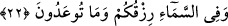

sorun. Zîra onun kanatları arasında her şeyin ilmi vardır. Bu benim ağzımdaki
Rasûlullah (s.a.)’in tükrüğüdür. Bu tükrük Allah’ın beni Rasûlullah (s.a.)’dan merzûk
kıldığıdır. Nefsim kudret elinde olan Allah’a yemin ederim ki Tevrat ve İncil’in
konuşmalarına izin verilse de ben onların içindekileri size haber verebilsem, muhakkak
onlar da beni tasdik ederlerdi” dedi.
Yemenli bir adam da orada bulunuyordu. Yanındakilere: “Bu adam çok derin bir laf
etti. Ben şimdi onu rezil edeceğim” diyerek kalktı ve: “Ey Ali! Söyle bakalım” dedi.
Hz. Ali de ona: “İlmini artırmak için sor. Can sıkıcı üzücü soruları sorma” deyince,
adam: “Beni bu soruyu sormama sen sebep oldun. Ey Ali! Sen Rabbini gördün mü? Ben
görmediğime ibâdet etmem. Peki O’nu nasıl görebilirim?” diye sorunca Ali (r.a.):
“Gözler bizâtihi O’nu göremez ama kalp gözleri îman hakikatı ile O’nu görür. Rabbim
tektir. Ortağı ve bir ikincisi yoktur. Eşsizdir, benzeri yoktur. Zaman ve mekândan
münezzehtir. Duyu organlarıyla algılanamaz. O’nunla hiçbir şeyin mukayesesi
yapılamaz” diye cevap verince adam bayılarak yere yığıldı. Ayılınca da: “Allah’a söz
veriyorum bir daha böyle can sıkıcı sorular sormayacağım” dedi.
Salihlerden birinden şöyle hikâye olunmuştur: O, bir gün rüyasında Marûf Kerhî’yi
gözlerini arşa doğru dikmiş, cennetin hûrileri ve saraylarıyla meşgul olurken görmüş.
Cennet bekçisi Rıdvan’a bunun kim olduğunu sorunca o şöyle demiş: “Bu Marûf
Kerhî’dir. O Allah’a özlem duyarak vefat etmiştir. Allah da onun arşa bakmasına izin
vermiştir” dedi. İşte onun bu bakışı, dünyadaki kalp bakışının neticelerindendir. Çünkü
Allah şöyle buyuruyor: “Şu dünyada kör olan kimse, âhirette de kördür...” (el-İsra
17/72)
Dünyada, dünya gözüyle en üstün bakma kabiliyeti ise Musa (a.s) ile ondan da daha
üstün bakış kabiliyetine sâhip olan Hz. Muhammed (s.a.)’e verilmiştir. Rasûlullah
(s.a.)’ın bakışları arşın üzerini de görebilecek kapasitedeydi. Halbuki arş, fizîki âlemin
en zirvesi ve ruhlar âlemiyle birleştiği yerdir.
Şunu bil ki avâmın görmesi ilim, havassın görmesi de ayn/hakikat mertebesindedir.
Onların, Allah Teala’nın efâli, sıfatları ve zâtı gibi tevhidî hususları görmelerinde de
mertebeleri vardır. Akıllı olan kişi, ilim mertebesinden ayn mertebesine, istidlâl
mertebesinden de şühûd ve huzur mertebesine yükselmeye gayret etsin.
22. Semâda da rızkınız ve size vaadedilen başka şeyler vardır.
Âyette, muzaf olarak gelmesi gereken “esbâb” kelimesi hazfedilmiştir. Dolayısıyla
mânâ “gökte rızık sebepleriniz var” şeklindedir. Bu rızıktan kasıd da gökteki güneş, ay
ve diğer yıldızlar ile rızıkların meydana gelme sebepleri olup mevsimlerin değişmesini
sağlayan güneşin doğma ve batma zamanlarının farklılığıdır.